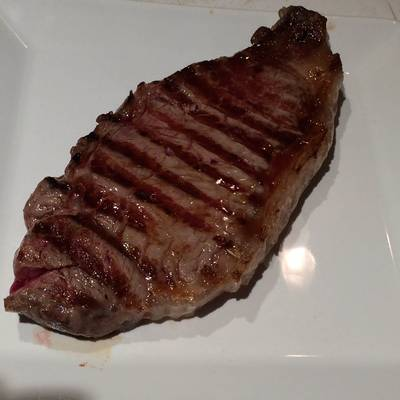

Depressing beef!
Description
I did this literally the first time I cooked for myself, it ended up in a depressing and stone-hard brown beef.
I fucking overcooked it.
Ingredients
- Some beef
- Salt
- Some onions, maybe
Steps
- Place oil on your frying pan
- Place yout beef
- Add onions to it
- Add some salt
- Dont fuck it up like me